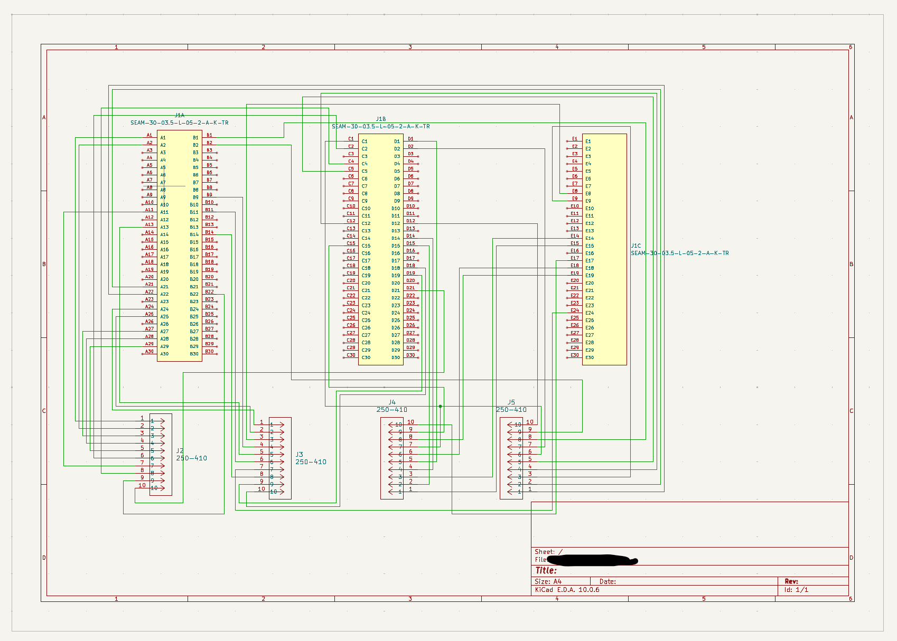
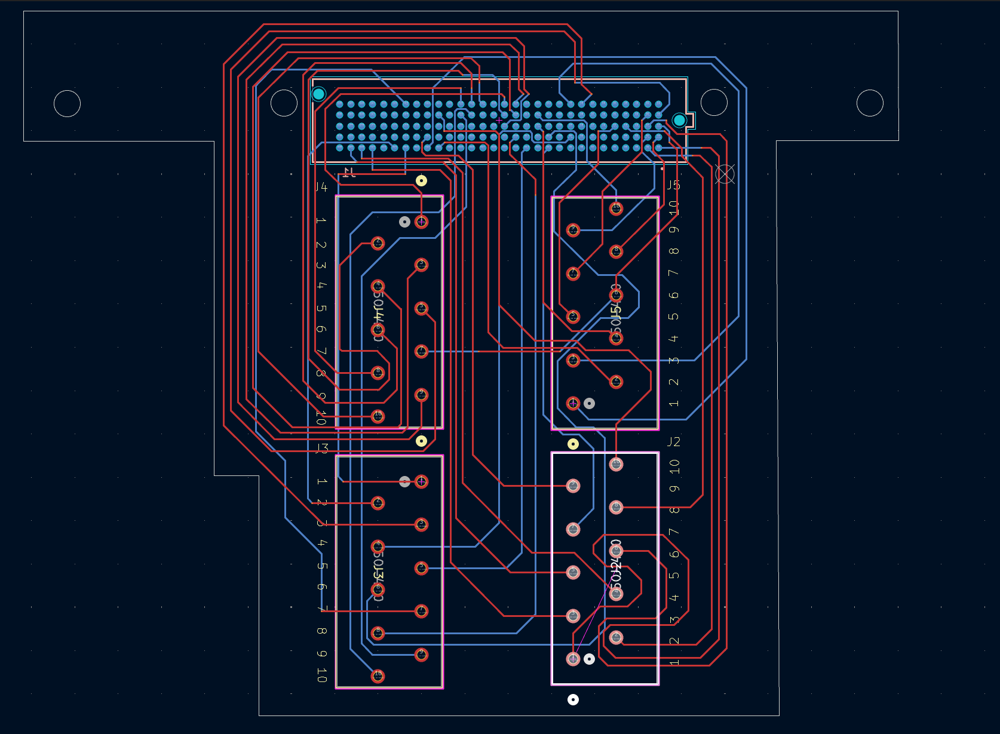

Breaking 40 usable pins out of a 150-pin processor port.
A Texas Instruments AM243x AVM board brings its I/O out on a single 150-position high-speed multiplexed array connector — dense, fragile, and impossible to wire a machine to directly. This board sits on that port and turns 40 of those pins into screw terminals that can drive actuators and relays and read analogue sensors.
Drag to orbit, scroll to zoom, right-drag to pan. Converted from the KiCad STEP export — the same geometry used to check mechanical fit.


The problem
The AM243x AVM board exposes its peripherals through a Samtec high-density array — 150 positions on a 0.50 mm pitch, five rows of thirty, with most pins multiplexed between several functions. Nothing in a machine cabinet plugs into that. Getting a relay, a valve or a 0–10 V sensor onto it needs an adapter that picks the right subset of pins and presents them in a form a wiring harness can be screwed into.
The board
- Mating connector: Samtec SEAM-30-03.5-L-05-2-A-K-TR, all 150 positions landed, drawn in the schematic as three units (rows A/B, C/D and E) so the pin selection stays readable.
- Field side: four ten-way 250-410 pluggable terminal connectors, J2–J5 — the 40 pins the application needs, grouped by function rather than by processor pin order.
- Board: 101 × 81 mm, 1.5 mm thick, two copper layers, with mounting holes and an outline cut back to clear the hardware it stacks onto.
- Routing: hand-routed fan-out from the pad field, top layer for the long runs around the perimeter, bottom layer to cross underneath.
Design notes
The interesting part of a breakout board is the pin choice, not the copper. Each of the 40 nets had to be a pin whose multiplexed function matched what it would drive — digital out for the relays, analogue-capable inputs for the sensors — and had to stay reachable once the fan-out from a 0.50 mm pad field had eaten the space around the connector.
Grouping the terminals by machine function rather than by processor order means the harness can be made without a pin map open next to it, and a channel can be traced from the terminal block straight through to the schematic sheet.
Toolchain
- EDA
- KiCad 10.0.6 — schematic, layout and 3D export
- Target
- TI AM243x AVM development board
- Connectors
- 1 × Samtec SEAM-30 (150 pos.) · 4 × 250-410 (10-way)
- Breakout
- 40 signals — actuators, relays, analogue sensors
- Stack-up
- 2 layers, 1.5 mm FR4, 101 × 81 mm
- 3D source
- STEP export, converted to glTF for the viewer above